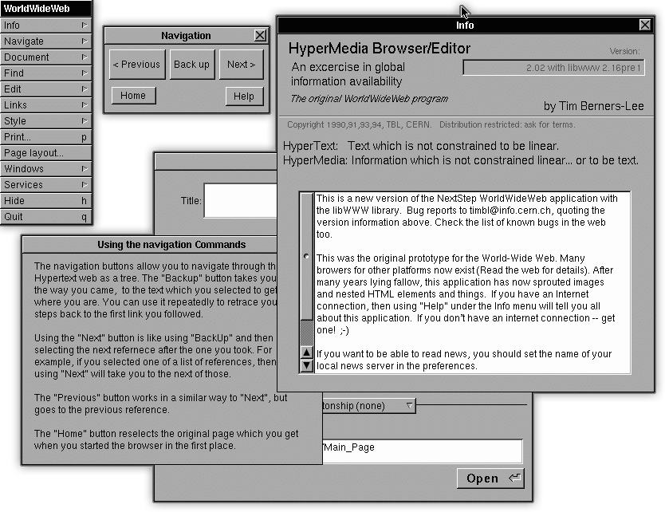

인터넷은 컴퓨터를 연결해 정보를 주고받는 컴퓨터 네트워크이다. 인터넷이란 이름은 TCP/IP를 정립한 빈튼 서프와 밥 간이 '네트워크의 네트워크'를 구현하여 모든 컴퓨터를 하나의 통신망 안에 연결(International Network)하고자 하는 의도에서 이를 줄여 인터넷(Internet)이라고 처음 명명하였던 어원을 두고 있다.
웹은 인터넷에 연결된 컴퓨터를 통해 사람들이 정보를 공유할 수 있는 전 세계적인 정보 공간을 말한다. 웹은 전자메일과 같이 인터넷 상에서 동작하는 하나의 서비스일 뿐이며 인터넷과 동의어로 쓰이는 경우가 있으나 엄격히 말해 서로 다른 개념이다.
웰드와이드웹(WorldWideWeb)은 세계 최초의 웹 브라우저이자, 위지윅 HTML 편집 프로그램이다. 팀 버너스리와 로베르카이오, 니콜라 펠로 등이 함께 개발에 참여해 웹 브라우저를 만들었다. 
세계 최초의 웹 페이지는 팁 버너스리가 1990년에 CERN에서 만든 http://info.cern.ch 이다.